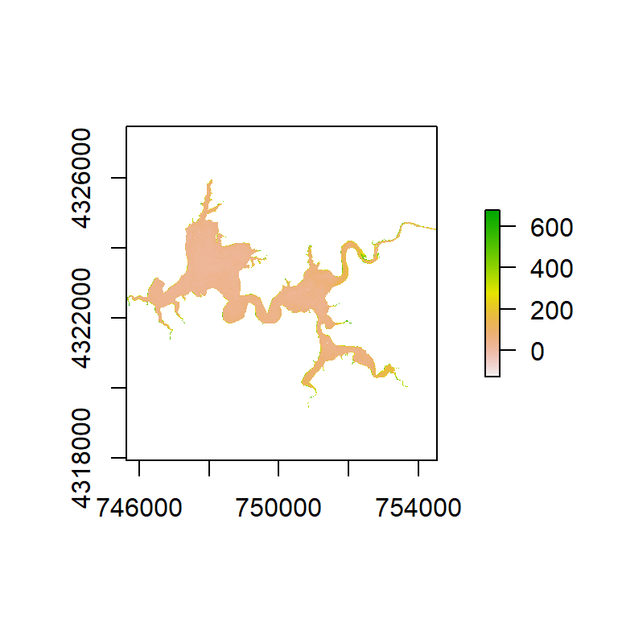
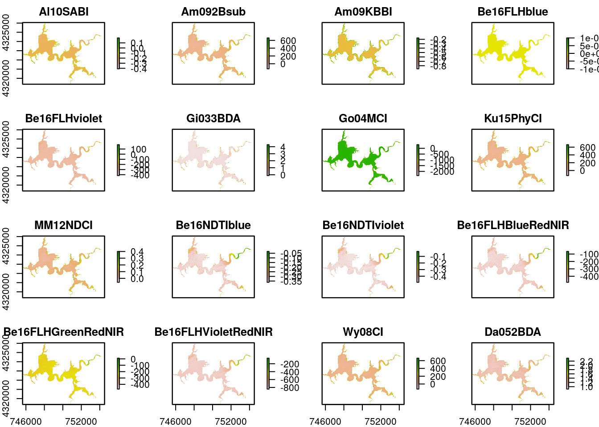
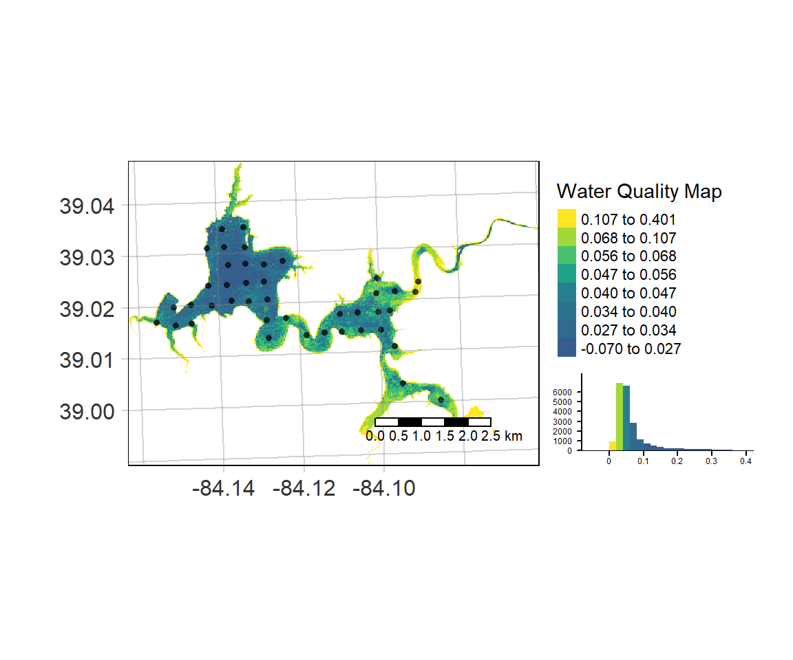
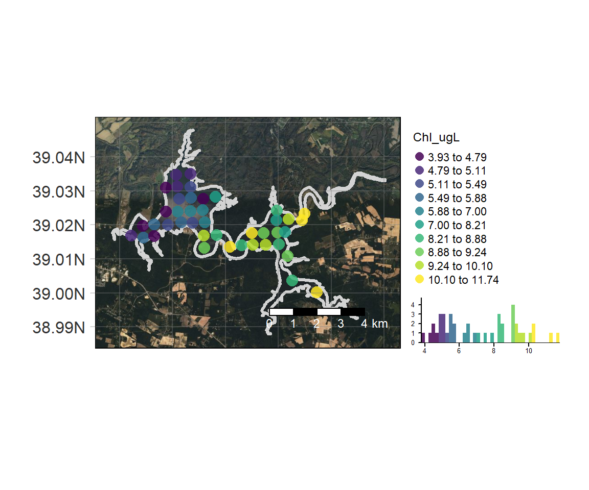

../vignettes/waterquality_vignette.Rmd
waterquality_vignette.RmdThe main purpose of waterquality is to quickly and easily convert satellite-based reflectance imagery into one or many well-known water quality indices designed for the detection of harmful algal blooms (HABs) using the following pigment proxies: chlorophyll-a, blue-green algae (phycocyanin), and turbidity. Currently, this package is able to process 45 algorithms for the following satellite-based imagers: WorldView-2 and -3, Sentinel-2, Landsat-8, MODIS, MERIS, and OLCI. In order to improve the aesthetics of the wq_calc output, a series of intuitive Map_WQ functions were developed to help reduce technical barriers due to coding and the myriad of map options.
Additional functionality of the package includes a series of extract_lm functions which wrap the “Fitting Linear Models” and the “caret” packages to quickly generate a suite of regression models with standardized outputs. These functions range from simple linear models for a single dependent and independent variable to robust linear regression using crossvalidation over multiple dependent and independent variables. These functions are extremely useful when conducting experimental testing on a large number of satellite algorithms across multiple water quality parameters. NOTE these functions require ground-truth data in order to develop the models.
For an example of our entire research workflow, which includes data acquisition, image pre-processing, analyses, and results please see our publication entitled “Waterquality: An Open-Source R Package for the Detection and Quantification of Cyanobacterial Harmful Algal Blooms and Water Quality”.
Currently, the package includes a total of 45 algorithms that can be applied for the detection of the three parameters. NOTE not all sensors are capable of using all algorithms due to their spectral configurations. Each of the algorithms are searchable within the package, where there is a reference to the original paper (Ex. ?Am092Bsub()). Each algorithm is also linked to the original papers water quality parameters (chlorophyll-a, phycocyanin, turbidity) by type, which allows users to select all algorithms for that type. The final outputs are raster stacked images which represent relative index values and are not direct estimations of chlorophyll-a, phycocyanin, or turbidity values. However, relative index values can be converted to estimated concentration values using the extract_lm functions and ground truth measurements.
The main function of this package is called wq_calc() which calculates water quality indices by using a reflectance raster stack as an input, user-defined algorithm(s) selection, and satellite configuration selection corresponding to the following three arguments: raster_stack, alg, and sat.
raster_stack - The input reflectance image to be used in band algorithm calculation.alg - Determines the indices to be utilized:
sat - Determines the appropriate spectral configuration and subsequently appropriate algorithms to be calculated from predefined list:
library(waterquality) library(raster) Harsha <- stack(system.file("raster/S2_Harsha.tif", package = "waterquality"))
Harsha_Am092Bsub <- wq_calc(raster_stack = Harsha, alg = "Am092Bsub", sat = "sentinel2")
plot(Harsha_Am092Bsub)

Harsha_Multiple <- wq_calc(raster_stack = Harsha, alg = c("Am092Bsub", "Go04MCI", "Da052BDA"), sat = "sentinel2")
plot(Harsha_Multiple)

This function wraps the “tmap” package to help users to efficiently generate a map of a raster image which can be overlaid with optional geospatial objects and data histogram. In order to simplify this process and reduce the technical expertise required, the number of arguments were reduced to the following: - WQ_raster - Raster file generated from wq_calc or other GeoTiff file
- sample_points - geospatial file (.shp or .gpkg) containing sampling locations - map_title - text used to generate title of map - raster_style - method to process the color scale when col is a numeric variable. Please refer to the style argument in the ?tmap::tm_raster() function for more details (Default is “quantile”). - histogram - Option to add or remove a histogram of the data values. (Default is TRUE)
library(waterquality) library(raster) library(tmap) library(sf) s2 = stack(system.file("raster/S2_Harsha.tif", package = "waterquality")) MM12NDCI = wq_calc(s2, alg = "MM12NDCI", sat = "sentinel2") samples = st_read(system.file("raster/Harsha_Simple_Points_CRS.gpkg", package = "waterquality")) lake_extent = st_read(system.file("raster/Harsha_Lake_CRS.gpkg", package = "waterquality"))
Map_WQ_raster(WQ_raster = MM12NDCI, sample_points = samples, map_title= "Water Quality Map", raster_style = "quantile", histogram = TRUE)

This function wraps the “tmap” & “tmaptools” packages in order to generate a map using user-defined vectors (points and a polygon) overlaid on a Bing basemap. In order to simplify this process and reduce the technical expertise required, the number of arguments were reduced to the following: - WQ_extent - geospatial file (.shp or .gpkg) used to extract aerial imagery from Bing basemaps
- WQ_parameter - text referring to column heading of data being mapped (i.e. Chl-a, PC, etc.) - sample_points - geospatial file (.shp or .gpkg) containing sampling locations - map_title - text used to generate title of map - raster_style - method to process the color scale when col is a numeric variable. Please refer to the style argument in the ?tmap::tm_raster() function for more details (Default is “quantile”). - histogram - Option to add or remove a histogram of the data values. (Default = TRUE)
Map_WQ_basemap(WQ_extent = lake_extent, sample_points = samples, WQ_parameter = "Chl_ugL", map_title= "Water Quality Map", points_style = "quantile", histogram = TRUE)

Developing models is an essential step in water quality monitoring, and this requires sufficient coincident ground truth data. These functions have been developed to combine user-provided ground truth data and the results from the wq_calc function to generate a single or series of regression models. These functions have been developed to easily conduct linear models with standardized outputs, providing intuitive yet robust options. Most effectively, the functions will utilize a single comma delimited (.csv) file as the data frame source. Although these functions were designed for our water quality research, they can be used as standalone functions for any data to generate the same standardized outputs containing the following:
Global Model
- r2
- p-value
- slope
- intercept
Crossvalidated Model
- average r2
- average RMSE
- average MAE
Additionally, we have provided code that might be useful to help users import and extract the data from a raster stack image (i.e. output from wq_calc), combine it with a geospatial object (i.e shapefiles of sample locations), and export the results to a .csv file to be used in the modeling functions.
#Input raster image wq_raster <- stack("C:/temp/my_raster.tif") #Input shapefile wq_samples <- shapefile('C:/temp/my_samples.shp') #Extract values from raster and combine with shapefile waterquality_data <- data.frame(wq_samples, extract(wq_raster, wq_samples)) #Export results as csv file write.csv(waterquality_data, file = "C:/temp/waterquality_data.csv")
parameter A string specifying water quality parameteralgorithm A string specifying water quality algorithmdf data frame containing the values for parameter and algorithm argumentslibrary(waterquality) library(caret) df <- read.csv(system.file("raster/waterquality_data.csv", package = "waterquality"))
extract_lm(parameter = "Chl_ugL", algorithm = "MM12NDCI", df = df) #> # A tibble: 1 x 4 #> R_Squared Slope Intercept P_Value #> <dbl> <dbl> <dbl> <dbl> #> 1 0.162 26.2 4.69 0.153
parameter A string specifying water quality parameteralgorithm A string specifying water quality algorithmdf data frame containing the values for parameter and algorithm argumentstrain_method A string specifying which classification or regression model to use (Default = “lm”). See ?caret::train for more detailscontrol_method A string specifying the resampling method (Default = “repeatedcv”). See ?caret::trainControl for more detailsfolds the number of folds to be used in the cross validation model (Default = 3)nrepeats the number of iterations to be used in the cross validation model (Default = 5)extract_lm_cv(parameter = "Chl_ugL", algorithm = "MM12NDCI", df = df, train_method = "lm", control_method = "repeatedcv", folds = 3, nrepeats = 5) #> # A tibble: 1 x 7 #> R_Squared Slope Intercept P_Value CV_R_Squared RMSE MAE #> <dbl> <dbl> <dbl> <dbl> <dbl> <dbl> <dbl> #> 1 0.162 26.2 4.69 0.153 0.390 1.83 1.30
parameters list of water quality parametersalgorithms list of water quality algorithmsdf data frame containing the values for parameter and algorithm argumentstrain_method A string specifying which classification or regression model to use (Default = “lm”). See ?caret::train for more detailscontrol_method A string specifying the resampling method (Default = “repeatedcv”). See ?caret::trainControl for more detailsfolds the number of folds to be used in the cross validation model (Default = 3)nrepeats the number of iterations to be used in the cross validation model (Default = 5)# Create series of strings to be used for parameters and algorithms arguments algorithms <- c(names(df[6:10])) parameters <- c(names(df[3:5])) extract_lm_cv_multi_results <- extract_lm_cv_multi(parameters = parameters, algorithms = algorithms, df = df, train_method = "lm", control_method = "repeatedcv", folds = 3, nrepeats = 5) head(extract_lm_cv_multi_results) #> # A tibble: 6 x 8 #> Algorithms R_Squared Slope Intercept P_Value CV_R_Squared RMSE MAE #> <chr> <dbl> <dbl> <dbl> <dbl> <dbl> <dbl> <dbl> #> 1 Turbid_NTU_Al10SABI 0.441 -30.5 -4.37 0.00954 0.599 3.02 2.00 #> 2 Turbid_NTU_Go04MCI 0.441 -30.5 -4.37 0.00954 0.577 2.78 1.85 #> 3 Turbid_NTU_Ku15Phy~ 0.441 -30.5 -4.37 0.00954 0.613 2.86 1.85 #> 4 Turbid_NTU_MM12NDCI 0.441 -30.5 -4.37 0.00954 0.578 2.89 1.95 #> 5 Turbid_NTU_Wy08CI 0.441 -30.5 -4.37 0.00954 0.503 3.08 2.01 #> 6 Chl_ugL_Al10SABI 0.534 -21.0 1.30 0.00299 0.504 1.36 1.03
parameters list of water quality parametersdf data frame containing the values for parameter and algorithm argumentstrain_method A string specifying which classification or regression model to use (Default = “lm”). See ?caret::train for more detailscontrol_method A string specifying the resampling method (Default = “repeatedcv”). See ?caret::trainControl for more detailsfolds the number of folds to be used in the cross validation model (Default = 3)nrepeats the number of iterations to be used in the cross validation model (Default = 5)extract_lm_cv_all_results <- extract_lm_cv_all(parameters = parameters, df = df, train_method = "lm", control_method = "repeatedcv", folds = 3, nrepeats = 5) head(extract_lm_cv_all_results) #> # A tibble: 6 x 8 #> Algorithms R_Squared Slope Intercept P_Value CV_R_Squared RMSE MAE #> <chr> <dbl> <dbl> <dbl> <dbl> <dbl> <dbl> <dbl> #> 1 Turbid_NTU_pH 0.976 -14.1 125. 4.86e-11 0.656 1.33 0.744 #> 2 Turbid_NTU_Al10S~ 0.441 -30.5 -4.37 9.54e- 3 0.549 2.85 1.89 #> 3 Turbid_NTU_MM12N~ 0.166 42.3 0.370 1.48e- 1 0.207 2.26 1.38 #> 4 Turbid_NTU_Da052~ 0.168 19.2 -18.7 1.45e- 1 0.291 2.73 1.79 #> 5 Turbid_NTU_MM12N~ 0.166 42.3 0.370 1.48e- 1 0.274 2.68 1.75 #> 6 Turbid_NTU_TurbD~ 0.136 -7.44 5.47 1.95e- 1 0.304 2.75 1.88
The waterquality package was developed with funding from the U.S. Army Corps of Engineers. The authors would also like to thank the University of Cincinnati Library’s Research & Data Services and the University of Cincinnati’s Space Informatics Lab for their expertise and technical services.
To cite this library, please use the following entry:
Johansen R., Reif M., Emery E., Nowosad J., Beck R., Xu M., Liu H., waterquality: An Open-Source R Package for the Detection and Quantification of Cyanobacterial Harmful Algal Blooms and Water Quality. USACE ERDC/EL TR-19-20; DOI: 10.21079/11681/35053
@Article{, author = {Richard Johansen and Molly Reif and Erich Emery and Jakub Nowosad and Richard Beck and Min Xu and Hongxing Liu}, title = {waterquality: An Open-Source R Package for the Detection and Quantification of Cyanobacterial Harmful Algal Blooms and Water Quality}, year = {2019}, doi = {10.21079/11681/35053}, journal = {USACE ERDC/EL TR-19-20}, }